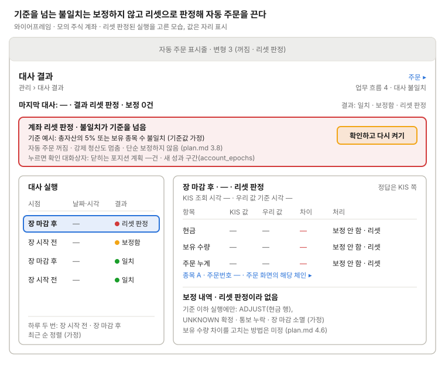

대사 결과
KIS와 내부 장부의 차이와 복구 기록.

왼쪽 실행 목록에서 고른 대사의 차이가 오른쪽 표에 나오고, 기준을 넘는 불일치면 보정하지 않고 리셋으로 판정해 맨 위 띠가 자동 주문을 끄고(표시줄 변형 3) 사람 확인을 기다린다. 다시 켜기는 확인 대화상자에서 닫히는 포지션 계획과 새 성과 구간을 보인 뒤 확정한다.
리셋으로 판정된 실행의 처리는 모두 "보정 안 함 · 리셋"이고 보정 내역(ADJUST)은 비어 있다(plan.md 3.8). 차이 행은 종목·주문번호를 보이고, 누르면 주문 화면의 해당 체인을 펼친 채 연다(업무 흐름 4). 보유 수량 차이를 고치는 방법은 미정이다.
쓰는 공통 UI
화면 틀 · 자동 주문 표시줄 (변형 3, 4) · 확인 대화상자 (리셋 판정 뒤 다시 켜기) · 주문 체인 행 (링크 대상) · 상태 표시명 (보정, 확인 중)
상태
| 상태 | 보일 것 |
|---|---|
| 오늘 아직 안 돈 대사 | 마지막 대사 줄에 이전 실행과 다음 예정 시점 |
| 대사 실행 중 | 실행 목록 맨 위에 "실행 중", 다시 켜기 잠금 |
| 대사 실패 | KIS 조회 오류·호출 한도(EGW00201) 문구, 결과 없음, 다시 실행 |
| 일치 | 차이 표 비움, "일치" |
| 보정함(기준 이하) | 열을 KIS 값(조회 시각) / 보정 전 / 차이 / 보정 후로, 보정 내역 줄마다 기록 시각 |
| 불일치로 신규 매수 건너뜀 | 표시줄 변형 4, 토글은 켜짐이고 강제 청산은 돈다 |
| 리셋 판정 | 그림의 상태. 표시줄 변형 3, 보정 행 없음 |
| 조회 누계 < 통보 누계 | 주문 누계 행에 알림 (plan.md 4.6) |
| 원장 반영 실패 | 계좌 반영 멈춤 알림 (plan.md 4.6 ledger_status) |
| 사람이 끈 뒤 리셋 판정 | 꺼진 이유 둘을 다 보인다. 리셋 확인 뒤 바로 켤지는 미정 |
화면 규칙
- 보여 줄 것: 차이 목록(잔고, 보유, 주문 누계), 보정 내역(
ADJUST), 계좌 리셋 판정 - 주의: 정답은 증권사 쪽이다. 리셋으로 판정하면 자동 주문이 꺼지고 성과 구간(
account_epochs)이 새로 시작된다. 통보 누락을 조회로 보정한 주문도 여기 남는다